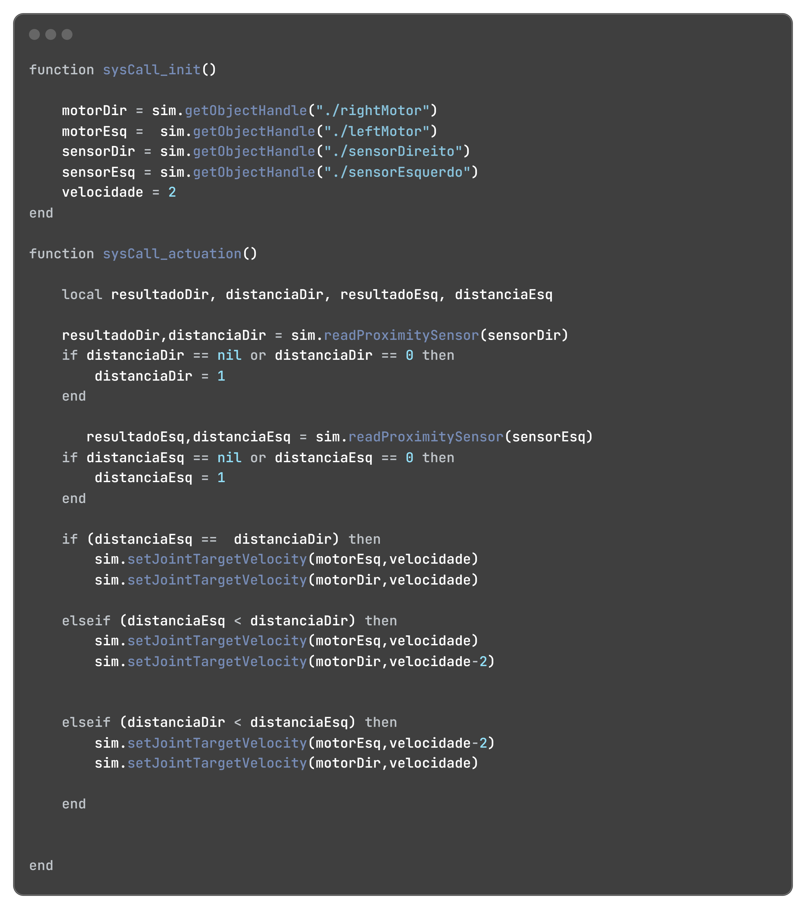

Nesta simulação, temos num cenário mais complexo, com obstáculos e curvas, dois robôs Pioneers. Pra estes, teremos codificações diferentes para cada pioneer, já que eles estarão em competição. Veja detalhes do código à seguir.
O código inicia com a inicialização dos elementos por padrão. Iniciados, vamos à ativação das ações: O robô 1 é programado para além de desviar dos obstáculos virando para direita ou esquerda seguindo a detecção dos sensores de proximidade, ter um tempo de escape, que faz com que ele vire para um ângulo aleatório e desvie, mudando seu curso temporariamente, e depois de desviado o robô oponete, ele volta para o seu curso normal.
Este código também inicia com a inicialização dos elementos por padrão. Iniciados, vamos à ativação das ações: A programação do robô 2 é bem mais simples, visto que ele apenas anda para frente e desvia de obstáculos que estão a sua frente.
Percebemos que a base da programação desta avaliação é a mesma da apresentada na avaliação V. Ou seja, a partir desta base, é possível explorar várias possibilidades com o pequeno Pioneer.